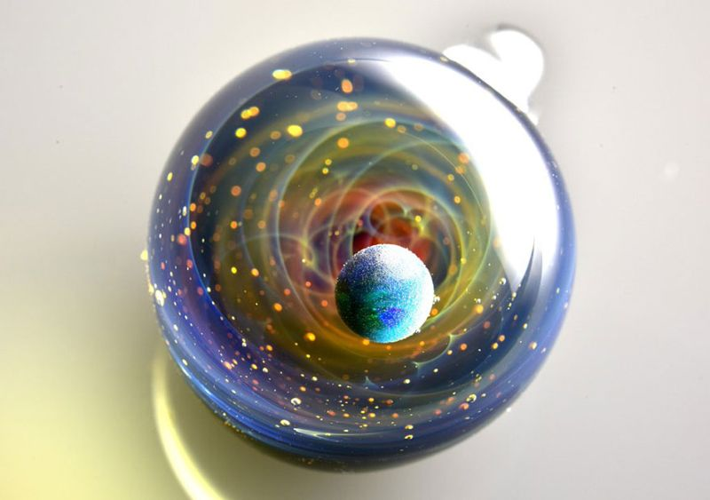

월드와이드웹(WorldWideWeb)은 세계 최초의 웹 브라우저이자, 위지윅 HTML 편집 프로그램이다. 1991년 2월 26일에 팀 버너스리가 이 프로그램을 처음 소개하였으며 넥스트스텝 플랫폼 위에서 동작한다. 나중에는 월드 와이드 웹의 이름과 충돌을 피하기 위해 넥서스로 이름이 바뀌었다. 소스 코드는 1993년에 공용 도메인으로 공개되었기 때문에 자유 소프트웨어가 되었다.